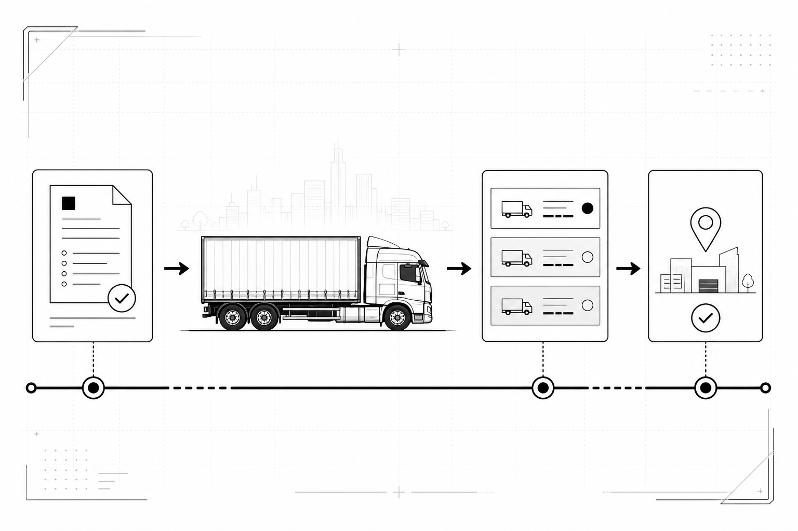

Fragmented communication
Important details often travel through separate phone calls and conversations.
Upcoming digital transport marketplace
Digi_TransX is being built to connect service seekers and transporters through structured orders, rule-based truck matching, competitive bidding and a connected trip workflow.

In many transport workflows, requirements move between people instead of moving through one connected system. Information gets repeated, options are hard to compare, and coordination becomes more complicated than the shipment itself.
The idea grew from the founder's family exposure to transport operations and a practical question: can software become the bridge between the people already doing this work?
Important details often travel through separate phone calls and conversations.
Each additional intermediary can add delay, confusion, and duplicated coordination.
When offers are scattered, choosing the right transporter becomes less transparent.
Booking, payment, communication, and completion can feel like separate processes.
Digi_TransX is designed around a marketplace workflow where transport needs are structured, relevant transporters can respond, and the selected trip continues through a connected digital journey.
Cargo type, weight, volume, dimensions, pickup, drop-off and budget are captured in one consistent request.
Multiple eligible transporters can respond with an owned compatible truck and a clear bid amount.
Checkout and settlement logic is implemented with dummy payments for internal testing; no live gateway is connected.
Selection, contextual chat, trip status, completion confirmation, ratings and disputes stay connected.
The One-Time Order module is an internal beta candidate. This is the implemented journey currently undergoing extensive private testing.
An Everyday or Business seeker enters cargo type, weight, volume, dimensions, pickup, drop-off and budget.
Rule-based matching identifies eligible trucks. The system does not automatically assign a transporter.
The seeker compares transporter, truck, bid amount and rating information, then chooses a bid.
Current development uses dummy payment. Successful checkout accepts one bid, holds payment and prepares the trip.
The transporter starts the trip and both sides can use contextual communication throughout the journey.
The transporter marks delivery complete. The client confirms Yes or No; a Yes requires a 1–5 rating.
A No opens dispute chat and admin review while payment remains held. Timeouts move to review rather than automatic payout or refund.
For service seekers
For transporters
The current system evaluates whether a transporter's active owned truck fits an order. Multiple compatible trucks and transporters may remain eligible, and the service seeker still chooses between bids.
Truck type, goods compatibility, weight capacity, dimensions and volume are checked against the order.
Pickup coordinates are compared with the truck's operating coordinates and configured service radius.
The truck must belong to the bidding transporter and be active before it can be used.
Matching does not select the nearest truck or assign a winner. Eligible transporters bid and the seeker decides.
The React/Vite frontend, Flask backend and shared test database environment support the current development version. Core One-Time workflows have undergone extensive automated and manual internal testing.
D-HAG is the broader technology company behind the project. Digi_TransX applies its practical technology-building approach to the everyday realities of goods transport coordination.
Digi_TransX
The platform is not open for public bookings. For project, partnership or general inquiries, contact D-HAG.